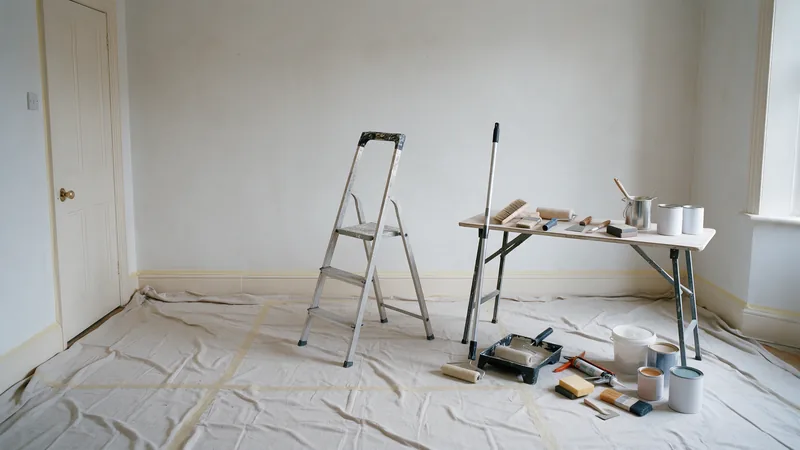

Generated photoGenerated for this demo. Not a photograph of a real job.
Nobody expects you to strip the room back to the floorboards. What genuinely helps is a small list of things, most of which take an evening, and every one of them buys back time that would otherwise come out of the job. Here it is, in the order it matters.
Empty it if you can, clear it if you cannot
An empty room is the single biggest thing. No furniture means no shuffling things from one side to the other halfway through, no working round a wardrobe that cannot be moved, and no sheet getting dragged off a sofa every time somebody walks past.
If it cannot be emptied, get everything small out: ornaments, books, photographs, lamps, anything on a shelf, anything breakable and anything you would be upset about. Big furniture can go into the middle and be covered, and we will help move it. What slows a job down is not the wardrobe, it is the forty small things on top of it.
Take these down yourself
- Curtains, blinds, poles and tracks. Poles off the wall rather than just the curtains off the pole, because the brackets want filling.
- Pictures, mirrors, shelves and anything hooked into the wall. Leave the holes, we will fill them.
- TV brackets if the TV is coming off anyway, and anything screwed to the skirting.
- Smoke alarm covers only if you know how, and never anything wired in.
Switch plates, socket plates and door handles are ours. We take those off rather than cut round them, and they go back at the end.
Tell us about these before we start
Some things change the job, and we would far rather hear them at the quote than find them on the first morning.
- Anywhere that has ever been damp. A stain behind a wardrobe, a patch by a chimney breast, a corner that goes black in winter. Paint will not cure it and it comes back through.
- A ceiling that has been patched. Filler that was never sealed will flash through the top coat as a dull patch, and it wants spot priming first.
- Water stains, smoke staining or heavy nicotine. They bleed through any number of water based coats and need a stain blocker rather than another coat of white.
- A wall that is powdery. Rub it with a damp cloth. If it comes off white on your hand, that surface wants sealing before anything goes on it.
- Any artex or textured coating. If it predates the year two thousand it can contain asbestos, so it must be sampled and tested by a lab before anybody sands, scrapes or dry removes it. If the test comes back positive, the removal is a licensed firm's job and not ours.
The thing that costs a day
Not choosing the colour. It sounds small and it is the one that really does cost time. Paint has to be bought, and on a short job there is no slack for a trip out and a wait while something gets mixed. Worse, a colour chosen on the morning is a colour chosen under one light, and that is how people end up living with something they do not like.
Get a tester, paint a good sized patch on a piece of lining paper rather than straight on the wall, and carry it round the room over a day: morning, late afternoon and under the lamps at night. A north facing room will make it colder and a warm bulb will pull it yellow. One day with a bit of paper saves a repaint.
Practical bits on the day
Parking somewhere near is worth more than people think, because everything comes out of the van and goes back in it. A tap and somewhere to empty a bucket. Somewhere to put a kettle that is not in the way. If there is an alarm, a pet, a key safe or a neighbour to warn about a hop up in the alley, say so when you book rather than on the morning.
And if you work from home, pick which room is yours for the week and tell us. It is much easier to plan round than to discover.
The short version
Empty it if you can. Take the curtains, the poles and anything hooked off the wall down. Tell us about damp, stains, patches and anything textured. Choose the colour before the week starts, and look at it in three different lights before you do.
Written for this demo from general trade knowledge. It is not advice on your property, and anything wet, anything structural and anything that might be an older textured coating wants somebody looking at the actual house.
More advice
While you are here.
 Generated photo
Generated photoExterior painting: the best time of year
Why the calendar matters less than the wall and the dew point, and which months really are no good.
 Generated photo
Generated photoPainting kitchen units: what to expect
What it can and cannot do, how long you lose the kitchen for, and why the prep is the whole job.
Want somebody to look at the actual walls?
Tell us which rooms and your postcode. Twenty minutes with a light held along the wall beats any article.